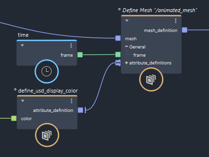
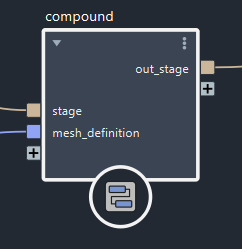
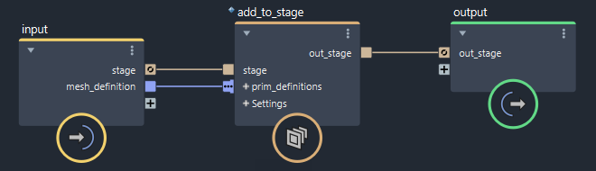
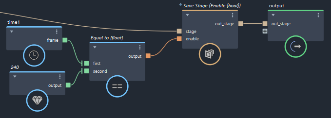

要在 USD 后台文件中存储动画（如变化属性或变形形状），必须将 time 节点的 frame 输出连接到对应的 Bifrost-USD 定义节点，并使用反馈循环中的 add_to_stage 节点逐帧累加后台文件中的数据。播放完所有帧后，将后台文件保存到文件。
使用 USD 格式的动画时，请确保禁用 Maya 中的“缓存播放”(Cached Playback)。
frame 输入在 define_usd_mesh 和 define_usd_attribute 节点上可用。
time 连接到 define_usd_attribute。time 连接到 define_usd_mesh。define_usd_mesh 节点的 attribute_definitions 端口，则无需分别将 time 连接到 define_usd_attribute 节点。您可以编辑现有复合或构建自己的复合，以设置其他基本体类型或特定属性的动画。
在 define_usd_mesh 或 define_usd_attribute 节点的参数中，启用 use_frame。
将 time 节点的 frame 输出连接到 frame 输入。在以下示例中，显示颜色属性也将设置动画，因为网格本身已设置动画。

选择下游 add_to_stage 复合，然后按 Ctrl+G 组合键创建复合。

双击复合以进入。
在 input 节点的 stage 端口上单击鼠标右键，选择“设置端口反馈 > out_stage”(Set Port Feedback > out_stage)。端口现在链接为反馈端口。

退出复合并播放场景，在后台文件累积动画数据。
播放完后，可以将后台文件保存或导出到文件。
如果需要，可以创建在最后一帧自动保存的条件。
